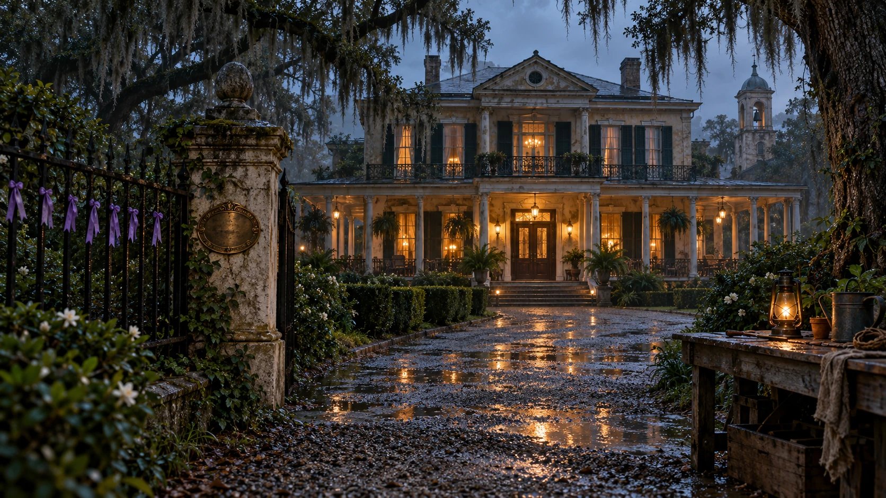

A HOUSE THAT KEPT ITS SECRETS
Gerouge Plantation
A Louisiana mansion. A history that will not stay buried.
Entering the room…
ARRIVAL · DUSK
Beyond the iron gates, the mansion dominates the gardens and outbuildings of rural St. Bernard Parish, Louisiana. Touch the front doors to enter.